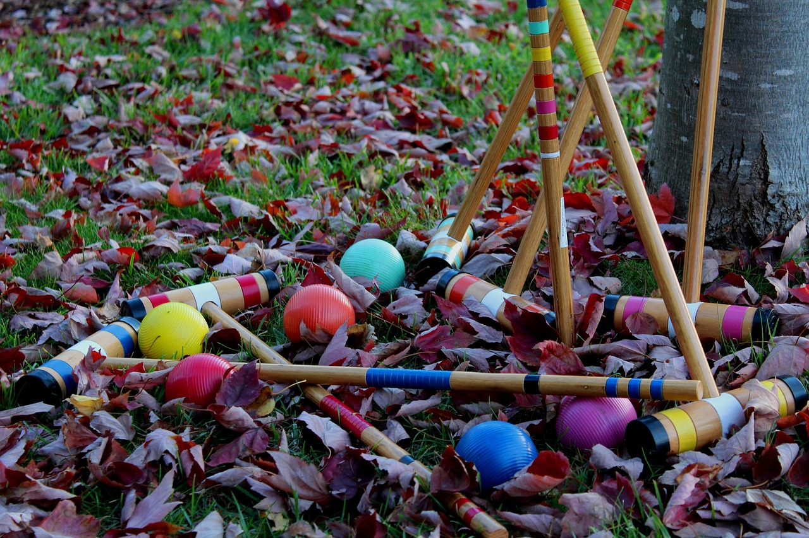

EST.1923YERONGA
Yeronga Park, Brisbane
A hundred years of croquet, and room for you.
Four full size courts and a clubhouse in Yeronga Park. Come and try a session or two at no charge. We provide the gear.

When we play
- WednesdayAssociation9.45am
- FridayGolf Croquet3.00pm
- SaturdayAssociation12.45pm
- SundayGolf Croquet3.00pm
Golf Croquet starts at 2.00pm from May to August. Casual green fees: visitors $15, registered players $10.
Club diary
-
7–8NOVAC CAQ Division 3 & 4 championshipsA CAQ state event at Stephens
-
26–30MARStephens Easter AC & GCOur club carnival
The diary is sponsored by
Your business name
Become a sponsor
15 October 1923
Mr F. Stimpson arrived with a horse and plough. Two lawns were laid, and a small clubhouse was built.
The club began with 18 members. Mrs Stimpson was the first president.
Read the club history